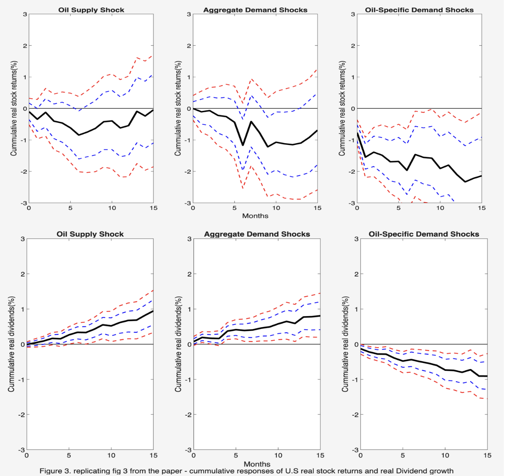

Oil Price Shocks and Stock Market Responses
Replicated Kilian & Park (2009) to examine how the source of an oil-price movement shapes stock-market responses. Using a structural Vector Auto regression(SVAR) linking global oil production, real economic activity, real oil prices and equity returns, I separated oil-market movements into supply, aggregate-demand and oil-specific demand shocks and traced their effects on U.S. equities.
I then extended the analysis through 2025 and to Canada, testing whether these oil–equity dynamics changed over time and whether they differed for a net oil-exporting economy.
View project ↗
Currency & Commodities: Can copper prices improve forecasts of the Chilean peso?
Compared a benchmark AR(2) exchange-rate model with an AR(2) model augmented with copper prices using expanding-window, one-step-ahead forecasts. After testing alternative specifications and evaluating out-of-sample performance, forecast accuracy remained remarkably difficult to improve: adding an economically plausible predictor produced almost no gain, with the Diebold–Mariano test finding no significant improvement. This highlighted how difficult it is to turn intuitive economic relationships into reliable out-of-sample forecasts — forecasting is hard!
How large should a microfinance experiment be to detect changes in household consumption?
Designed a microfinance impact study to estimate how many households would be needed to reliably detect changes in household consumption. Using statistical power analysis in Stata, I calculated required sample sizes under both household-level and cluster-level randomisation. I estimated the intra-cluster correlation (ICC) and design effect to account for similarities between households in the same location. I also tested how changing the minimum detectable effect (MDE) affected the sample size and cost of the study. Finally, I explored alternative research designs that could reduce costs while maintaining statistical power and credible results.
Forecasting Disney stock volatility with GARCH models
Analysed daily Disney stock returns from 2019 to 2025 to understand and forecast changing market volatility. I compared GARCH, GJR-GARCH and EGARCH models to capture volatility clustering and asymmetric responses to positive and negative market shocks, before generating rolling out-of-sample forecasts. Forecast accuracy was evaluated using QLIKE loss and the Diebold–Mariano test, with EGARCH producing a lower average forecast loss and marginal evidence of better predictive performance.
When the Roof Caved In: Lessons from the 2007–2008 Housing Crisis
Built an interactive scrollytelling visualisation exploring how house prices changed during the 2007–2008 housing crisis. Using R and ggplot2, I compared price trends across time and counties, examined shifts in the distribution of house prices, and visualised how the composition of sales changed across different price ranges. The analysis was presented as an interactive narrative using Quarto and Closeread.